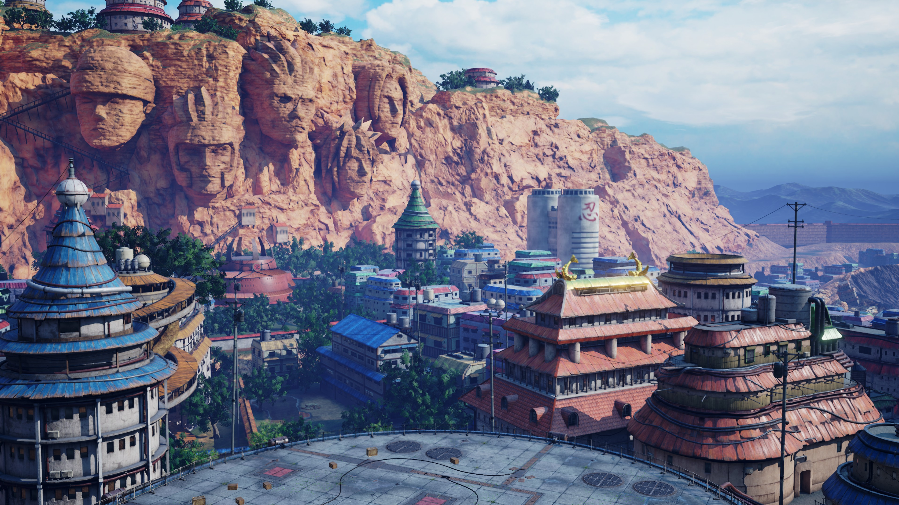
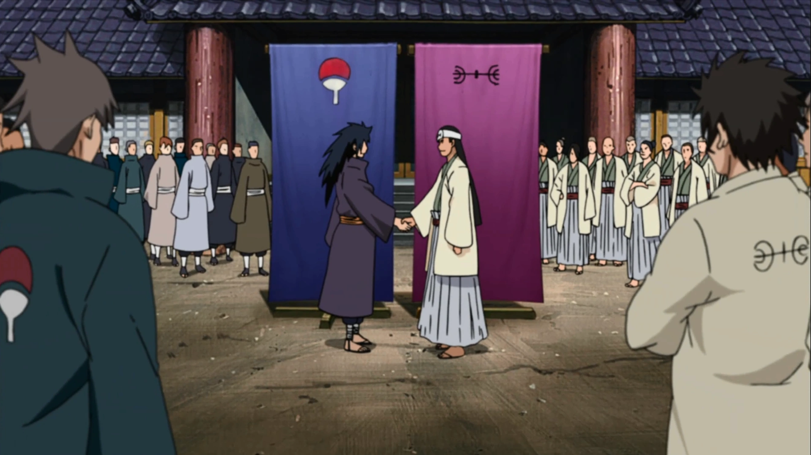

Konohagakure no Sato
Konohagakure (木ノ葉隠れの里, Konohagakure no Sato, English: "Village Hidden in the Leaves" or "Hidden Leaf Village". Literally meaning: Village Hidden by
Tree Leaves) is the hidden village of the Land of Fire.
As the village of one of the Five Great Shinobi Countries, Konohagakure has a Kage as its leader known as the Hokage, of which there have been seven in its
history. Konoha resides deep within a forest at the base of a mountain known as the Hokage Rock, which has the faces of all those who have taken the office
of Hokage engraved on it. While generally seen as the most powerful of the ninja villages, Konoha has enjoyed many years of relative peace and stability.

Hystory
During the Warring States Period, ninja were organised into small mercenary clans that knew nothing but battle. The two strongest of these clans were the
Senju and the Uchiha, who had warred against each other for their entire histories.Eventually, intending to end the constant bloodshed, Hashirama
Senju used his position as leader of his clan to broker a truce with the Uchiha clan through their leader, his childhood friend Madara Uchiha. Thus the
Senju, the Uchiha, and their respective affiliated clans formed the first shinobi village: Konohagakure — a name invented by Madara himself. Other
villages would soon start forming, following Konoha's example and essentially ending the Warring States Period.
Hashirama used his Wood Release abilities to produce much of the village's infrastructure.This ability and his ideals were two of the reasons he was chosen
to become the village's leader: the Hokage. Madara, however, feared that the Senju would oppress his clan and attempted to gather support to overthrow
Hashirama. No Uchiha would help, forcing him to take on Hashirama by himself. Madara was ultimately defeated at what would be called the Valley of the
End and he was believed to have died. As a result of the battle, Konoha came into possession of the Nine-Tails. To contain its enormous power, the village
began its trend of sealing the beast within the Uzumaki, a clan that the Senju and thus the rest of Konoha had close ties with.
The First Three World Wars
At some point, Hashirama came to bind most of the tailed beasts and sold them to other villages during the First Shinobi World War, to promote peace
and tranquility. However, this peace was short-lived. Hashirama died during the war, shortly after the village began to flourish, and the mantle of Hokage
was passed onto his brother, Tobirama Senju, who became the Second Hokage. Tobirama would later be killed by Kinkaku during the same war, but
appointed Hiruzen Sarutobi as Third Hokage shortly before his death. Years later, during the Second Shinobi World War, Hiruzen led Konoha's forces against
Iwa and Suna, using Amegakure as their battleground. Ame's leader, Hanzō, also fought Konoha a number of times, and during one of these battles gave
Hiruzen's students - Jiraiya, Tsunade, and Orochimaru - the title of Sannin. During the Third Shinobi World War, Konoha fought the ninja of Iwagakure across
Kusagakure. Konoha was almost defeated, but Minato Namikaze and his team helped turn the war back in their favour.
